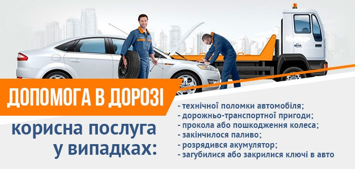

<div class="concierge">
    <div class="container">
      <div class="row">
        <div class="col xl7 offset-xl2">
          <h1>Допомога в дорозі</h1>
          
          <h2>Допомога в дорозі у разі виникнення надзвичайних ситуацій</h2>
          <p>Послуга «Допомога в дорозі» доступна кожному клієнту безкоштовно. 
            Цей пакет послуг включає комплексну технічну підтримку в дорозі, і може виявитися незамінними у багатьох дорожніх сценаріях:</p>
          <ul>
            <li>поломка автомобіля</li>
            <li>ДТП</li>
            <li>прокол шини</li>
            <li>малий залишок палива</li>
            <li>розряджений акумулятор</li>
            <li>втрата ключів від автомобіля</li>
          </ul>
          <h2>Несправність</h2>
          <p>Ми приділяємо особливу увагу безпеці і технічному стану нашого автопарку, регулярно проводячи перевірки стану автотранспорту та заходи щодо 
            технічного обслуговування. Але навіть 
            нові автомобілі не захищені від поломки; ми гарантуємо, що наші клієнти не залишаться в біді. У разі будь-якої поломки в дорозі, 
            просто повідомте нас про проблему, і наші фахівці зроблять все, щоб усунути їх в найкоротший термін. Поки машина знаходиться в ремонті,
             ми надамо вам інший автомобіль, щоб поломка мінімально вплинула на рівень вашого комфорту.</p>
            <h2>ДТП</h2>
            <p>Всі наші автомобілі застраховані, тому ви можете не турбуватися про пошкодження. Якщо ви потрапили в ДТП, зателефонуйте нам,
               і ми надамо вам всеосяжну допомогу. Працівники нашої служби підтримки викличуть поліцію, швидку, або евакуатор для транспортування
                вашого автомобіля, а також допоможуть з оформленням документів для відшкодування збитків або проконсультують щодо будь-яких інших супутніх питань.</p>
              <h2>Прокол автошини</h2>
            <p>Здута автошина (прокол, вибоїна на дорозі, або інші причини). Самостійне усунення проколу автошини? Залиште це сумнівне задоволення іншим водіям, адже ви можете
               розраховувати на нашу допомогу. Ми надішлемо нашу службу технічної підтримки для заміни шини, і ви зможете продовжити подорож, не забруднивши рук.</p>
               <h2>Малий залишок палива</h2>
               <p>Забули перевірити рівень палива в баку і вичерпали його, перш ніж доїхати до найближчої АЗС? Не біда! Повідомте нас, і наша команда доставить паливо в 
                 будь-яке місце, де ви були змушені зупинитися. Ви платите тільки за паливо, послуга доставки залишається безкоштовною.</p>
                <h2>Розряджений акумулятор</h2>
              <p>Акумулятор може розрядитися з багатьох причин, але, в будь-якому випадку, у вас завжди є хороша опція – скористайтеся послугою «Допомога в дорозі». 
                Наші фахівці прийдуть вам на допомогу і забезпечать зарядку акумулятора, а також допоможуть завести машину.</p>
              <h2>Втрата ключів</h2>
              <p>Будь-який водій може зіткнутися з такою проблемою. Якщо ви забули ключі в багажнику, або просто не можете їх знайти, не панікуйте і зверніться за допомогою 
                до професіоналів. Ми надамо вам запасний набір ключів і забезпечимо доступ до салону.</p>
              <p>Ми намагаємося бути ближче до клієнтів та задовольнити їхні запити; ми на зв'язку цілодобово, тому ви можете розраховувати на нашу підтримку. 
                Скористайтеся послугою «консьєрж-сервісу» – з нею ви можете вибрати і зарезервувати будь-яку додаткову опцію.</p>
        </div>
      </div>
    </div>
  </div>